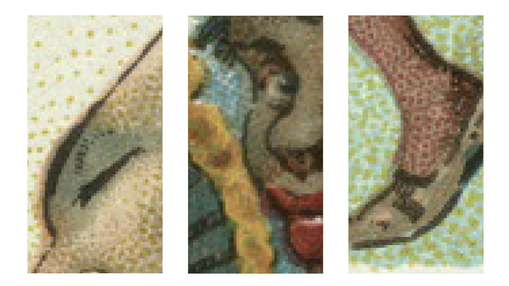

Duke’s Cigarette Cards
Coins of All Nations, 1889
Case Study #1: Curation

The blur as a visual strategy obscures, corrupts, and masks the racial implications and stereotypes of the caricatures in the cigarette cards.
Duke’s Cigarette Cards
Coins of All Nations, 1889
Case Study #2: Erasure

What is revealed through the act of erasure and concealment? This case study holistically examines the act of seeing, the consequences of removal, and the influence of color.
Duke’s Cigarette Cards
Coins of All Nations, 1889
Case Study #3: Magnification
The pixelation is an intentional glitch, a perceptible signal, drawing attention to the construction and reconstruction of the file.